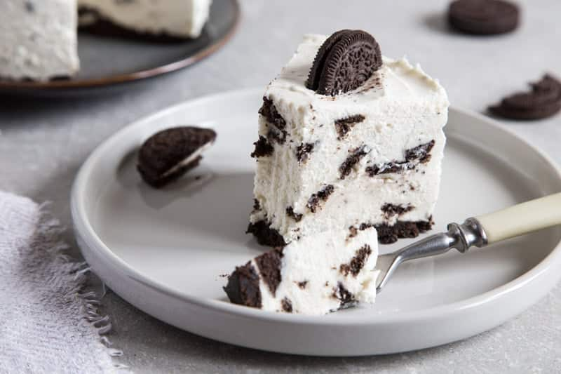

Torta Alaska
La Tarta Alaska, también conocida como tarta noruega o baked Alaska, es un postre que combina bizcocho, helado y merengue en una experiencia de contrastes de temperatura y textura. Su base de bizcocho sostiene un helado firme, mientras que una capa de merengue suizo lo cubre todo, protegiendo el helado y permitiendo dorar la superficie para un acabado espectacular. Ideal para sorprender a invitados y disfrutar de un postre elegante y vistoso en cualquier ocasión especial.
- 1 bizcocho redondo de unos 20 cm de diámetro y 2 cm de grosor (comprado o casero)
- 1 litro de helado firme (vainilla, crema americana o similar)
- 4 claras de huevo (a temperatura ambiente)
- 250 g de azúcar
- 75 ml de agua
- 1 cdta. de zumo de limón o 1/4 cdta. de cremor tártaro
Coloca el bizcocho en una fuente resistente al horno y cúbrelo con una capa generosa de helado, dándole la forma deseada. Lleva al congelador al menos 2 horas para que el helado esté completamente firme. Para el merengue, calienta el azúcar y el agua hasta alcanzar el punto de bola blanda y, mientras tanto, bate las claras con el limón o cremor tártaro hasta formar picos suaves. Vierte el almíbar caliente en las claras sin dejar de batir hasta obtener un merengue firme y brillante. Cubre completamente el helado con el merengue, asegurándote de que no quede expuesto. Para dorar, utiliza el horno en función grill durante 1-2 minutos o un soplete de cocina, vigilando que se dore sin quemarse. Sirve inmediatamente o conserva en el congelador hasta el momento de disfrutar.

Cheesecake
El pay de queso, también conocido como cheesecake, es un postre cremoso y clásico que combina la suavidad del queso crema con una base crujiente de galleta. Su sabor dulce y textura aterciopelada lo convierten en una elección perfecta para celebraciones, reuniones familiares o simplemente para disfrutar de un postre indulgente en casa. Esta receta permite personalizarlo con frutas, chocolate o caramelo, adaptándolo a todos los gustos.
- 200 g de galletas trituradas
- 100 g de mantequilla derretida
- 500 g de queso crema
- 150 g de azúcar
- 3 huevos
- 1 cucharadita de extracto de vainilla
Primero, mezcla las galletas trituradas con la mantequilla derretida hasta formar una masa uniforme y presiónala en el fondo de un molde de unos 23 cm de diámetro para crear la base; luego refrigera. Para el relleno, bate el queso crema con el azúcar hasta que quede suave, incorpora los huevos uno a uno y añade el extracto de vainilla, mezclando bien. Vierte la mezcla sobre la base de galleta y hornea a 160°C durante 45-50 minutos. Deja enfriar a temperatura ambiente y luego refrigera al menos cuatro horas o toda la noche. Se puede servir solo o con frutas frescas, chocolate, caramelo, frutos secos o una capa de crema chantilly para un toque especial.

Torta Bombón Suizo
La torta bombón suizo es un postre irresistible para los verdaderos amantes del chocolate. Inspirada en la tradición chocolatera de Suiza, combina un bizcochuelo húmedo y esponjoso con un relleno cremoso y una cobertura intensa con un delicado toque de café. Elegante, profunda en sabor y perfecta para cualquier ocasión especial, esta torta transforma un momento simple en una experiencia inolvidable.
- 200 g de chocolate negro (60% cacao o más)
- 200 g de manteca
- 200 g de azúcar
- 4 huevos
- 150 g de harina
- 1 cucharadita de polvo de hornear
- 1 pizca de sal
Para el relleno y la cobertura:
- 100 g de chocolate negro
- 200 ml de crema de leche
- 2 cucharadas de manteca
- 1 cucharada de azúcar
- 1 cucharadita de esencia de vainilla
- 2 cucharadas de café
Primero se derrite el chocolate junto con la manteca a baño maría hasta obtener una mezcla lisa y brillante. Aparte, se baten los huevos con el azúcar hasta lograr una textura espumosa, y luego se incorpora el chocolate derretido. Se agregan los ingredientes secos tamizados y se mezcla suavemente hasta integrar. La preparación se vierte en un molde y se hornea hasta que el centro esté cocido.
Una vez frío, se corta el bizcochuelo por la mitad y se rellena con la crema previamente batida con azúcar y vainilla. Después de un reposo en frío, se cubre con el chocolate derretido mezclado con café y manteca, logrando esa capa brillante y tentadora que la caracteriza. Finalmente, se lleva nuevamente a la heladera para que tome consistencia antes de servir.

Torta Oreo
La torta Oreo es una de las recetas más famosas y simples que existen. Cremosa, intensa y con el equilibrio perfecto entre queso crema y chocolate, es ideal para cumpleaños, reuniones o simplemente para disfrutar algo dulce sin complicaciones. No necesita horno y se prepara con ingredientes muy fáciles de conseguir. En pocas horas vas a tener una torta espectacular, firme y lista para servir.
- 800 gr de queso crema
- 400 gr de crema de leche
- 34 galletas Oreo
- 80 gr de manteca
- 100 ml de leche
- 120 gr de azúcar
- Jugo de ½ limón
- 16 gr de gelatina sin sabor
- Una pizca de sal
Separar la crema de las galletas. Triturar las tapas y mezclarlas con la manteca hasta formar una base húmeda. Colocar en un molde desmontable, presionar bien y llevar a la heladera.
En una olla, calentar el queso crema junto con la crema blanca de las galletas, 80 gr de azúcar y el jugo de limón. Revolver hasta integrar. Agregar la leche y la gelatina disuelta, mezclar hasta que espese levemente.
Batir la crema de leche con los 40 gr de azúcar restantes hasta que esté semimontada e incorporarla con movimientos envolventes a la mezcla anterior.
Volcar sobre la base y refrigerar al menos 6 horas. Desmoldar y decorar con galletas Oreo.
